Untitled
Thomas Mock
8/27/2020
Many thanks to Ethan Douglas for sharing his heatmap passing charts on OpenSource Football!
This is a similar walkthrough in R + ggplot2, but credit for both collecting the data and a lot of the general ideas are Ethan’s!
Load Everything
library(tidyverse)
library(ggExtra)
library(patchwork)
library(paletteer)
library(scales)pass_map_df <- read_csv("https://raw.githubusercontent.com/ArrowheadAnalytics/next-gen-scrapy-2.0/master/pass_and_game_data.csv") %>%
na.omit() %>%
select(-X1)## Warning: Missing column names filled in: 'X1' [1]## Parsed with column specification:
## cols(
## .default = col_character(),
## X1 = col_double(),
## game_id = col_double(),
## week.x = col_double(),
## x_coord = col_double(),
## y_coord = col_double(),
## season = col_double(),
## week.y = col_double(),
## gameday = col_date(format = ""),
## gametime = col_time(format = ""),
## away_score = col_double(),
## home_score = col_double(),
## home_result = col_double()
## )## See spec(...) for full column specifications.## Warning: 2349 parsing failures.
## row col expected actual file
## 2050 week.x a double divisional 'https://raw.githubusercontent.com/ArrowheadAnalytics/next-gen-scrapy-2.0/master/pass_and_game_data.csv'
## 2051 week.x a double divisional 'https://raw.githubusercontent.com/ArrowheadAnalytics/next-gen-scrapy-2.0/master/pass_and_game_data.csv'
## 2052 week.x a double divisional 'https://raw.githubusercontent.com/ArrowheadAnalytics/next-gen-scrapy-2.0/master/pass_and_game_data.csv'
## 2053 week.x a double divisional 'https://raw.githubusercontent.com/ArrowheadAnalytics/next-gen-scrapy-2.0/master/pass_and_game_data.csv'
## 2054 week.x a double divisional 'https://raw.githubusercontent.com/ArrowheadAnalytics/next-gen-scrapy-2.0/master/pass_and_game_data.csv'
## .... ...... ........ .......... ........................................................................................................
## See problems(...) for more details.glimpse(pass_map_df)## Rows: 49,758
## Columns: 23
## $ game_id <dbl> 2017091004, 2017091004, 2017091004, 2017091004, 201709100…
## $ team <chr> "ARI", "ARI", "ARI", "ARI", "ARI", "ARI", "ARI", "ARI", "…
## $ week.x <dbl> 1, 1, 1, 1, 1, 1, 1, 1, 1, 1, 1, 1, 1, 1, 1, 1, 1, 1, 1, …
## $ name <chr> "Carson Palmer", "Carson Palmer", "Carson Palmer", "Carso…
## $ pass_type <chr> "COMPLETE", "COMPLETE", "COMPLETE", "COMPLETE", "COMPLETE…
## $ x_coord <dbl> 13.5, -13.7, 2.2, 23.9, -23.5, -4.4, 8.0, -19.0, -8.4, -1…
## $ y_coord <dbl> -2.8, -4.4, 7.1, 10.0, 14.6, 5.3, 5.2, 18.0, 8.3, 12.4, -…
## $ game_id.y <chr> "2017_01_ARI_DET", "2017_01_ARI_DET", "2017_01_ARI_DET", …
## $ season <dbl> 2017, 2017, 2017, 2017, 2017, 2017, 2017, 2017, 2017, 201…
## $ game_type <chr> "REG", "REG", "REG", "REG", "REG", "REG", "REG", "REG", "…
## $ week.y <dbl> 1, 1, 1, 1, 1, 1, 1, 1, 1, 1, 1, 1, 1, 1, 1, 1, 1, 1, 1, …
## $ gameday <date> 2017-09-10, 2017-09-10, 2017-09-10, 2017-09-10, 2017-09-…
## $ weekday <chr> "Sunday", "Sunday", "Sunday", "Sunday", "Sunday", "Sunday…
## $ gametime <time> 13:00:00, 13:00:00, 13:00:00, 13:00:00, 13:00:00, 13:00:…
## $ away_team <chr> "ARI", "ARI", "ARI", "ARI", "ARI", "ARI", "ARI", "ARI", "…
## $ home_team <chr> "DET", "DET", "DET", "DET", "DET", "DET", "DET", "DET", "…
## $ away_score <dbl> 23, 23, 23, 23, 23, 23, 23, 23, 23, 23, 23, 23, 23, 23, 2…
## $ home_score <dbl> 35, 35, 35, 35, 35, 35, 35, 35, 35, 35, 35, 35, 35, 35, 3…
## $ home_result <dbl> 12, 12, 12, 12, 12, 12, 12, 12, 12, 12, 12, 12, 12, 12, 1…
## $ stadium <chr> "Ford Field", "Ford Field", "Ford Field", "Ford Field", "…
## $ location <chr> "Home", "Home", "Home", "Home", "Home", "Home", "Home", "…
## $ roof <chr> "dome", "dome", "dome", "dome", "dome", "dome", "dome", "…
## $ surface <chr> "fieldturf", "fieldturf", "fieldturf", "fieldturf", "fiel…Why not just plot the points?
We run the risk of overplotting by plotting just the points without thinking or adjusting any of the aesthetics.
Hadley Wickham in ggplot2: Elegant Graphics for Data Analysis:
However, when the data is large, points will be often plotted on top of each other, obscuring the true relationship. In extreme cases, you will only be able to see the extent of the data, and any conclusions drawn from the graphic will be suspect. This problem is called overplotting.
Hadley uses an example w/ 2000 data points, which already has a lot of overplotting due to a small sample x-y space. We have about 43,000 passes for this dataset, spread out over a relatively large space. We still need to be careful of overplotting though!
Fear the beard
We can display our points with a quick geom_point() call but this returns a lot of overplotting albeit in a happy beard shape!
pass_map_df %>%
ggplot(aes(x = x_coord, y = y_coord)) +
geom_point()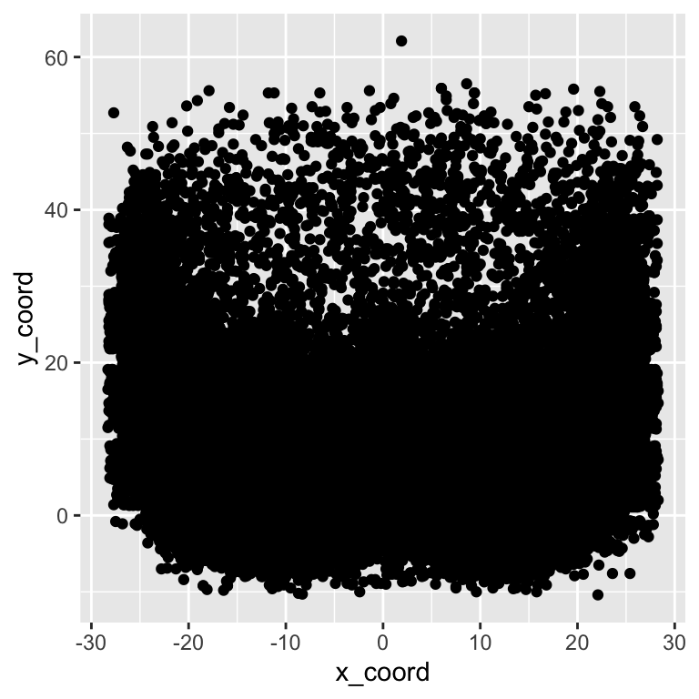
We can add 90% transparency with alpha = 0.1 and change the color to red, but this still leaves us with a difficulty parsing through the high vs medium pass locations. Passes around the 5 yard mark appear to be as common as at the 10 and even 15 yard mark in some cases! We can try to get at the data a bit close with ggMarginal from the ggExtra R package, which provides marginal histograms, box plots, or density plots.
red_beard <- pass_map_df %>%
ggplot(aes(x = x_coord, y = y_coord)) +
geom_point(alpha = 0.1, color = "red")
red_beard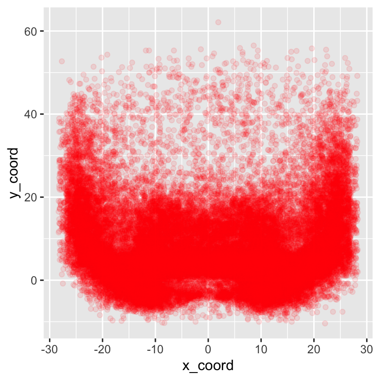
We can add some marginal plots to help out a bit, but that still doesn’t solve the problem of honing in on specific areas of interest that well.
# add density or histogram in the margins
ggMarginal(red_beard, type = "density", fill = "red")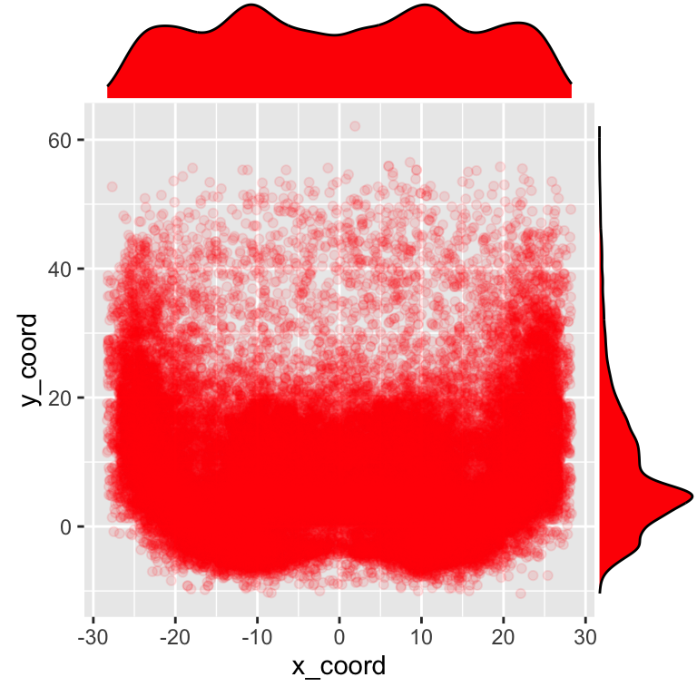
# add density or histogram in the margins
ggMarginal(red_beard, type = "histogram", fill = "red")
Alternatives to the beard
Since we’re actually interested in the density/counts of observations at each x-y coordinate instead of plotting each individual point, we also have a few other tools in our toolbox! We can use geom_hex() or geom_bin2d(). Note that there are a few other methods such as geom_raster() which require you to provide your own “z” metric, and there are stat_? versions of each of these geoms for more custom calculations.
hex_plot <- pass_map_df %>%
ggplot(aes(x = x_coord, y = y_coord)) +
geom_hex(
binwidth = c(1, 1)
) +
scale_fill_gradient(low = "red", high = "yellow") +
geom_hline(yintercept = c(0, 10), color = "grey") +
scale_y_continuous(breaks = seq(-10, 60, 5))
hex_plot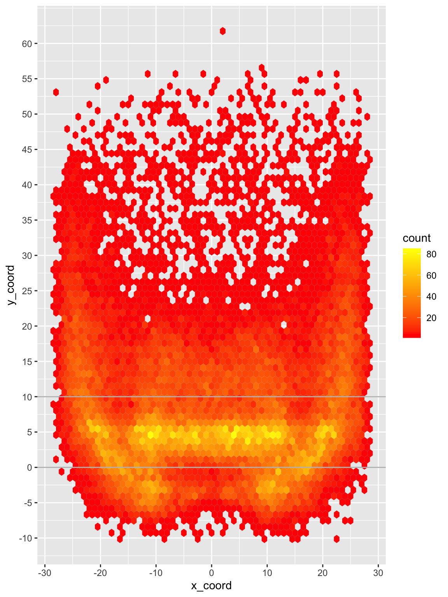
bin2d <- pass_map_df %>%
ggplot(aes(x = x_coord, y = y_coord)) +
geom_bin2d(
binwidth = c(1, 1)
) +
scale_fill_gradient(low = "red", high = "yellow") +
geom_hline(yintercept = c(0, 10), color = "grey") +
scale_y_continuous(breaks = seq(-10, 60, 5))
bin2d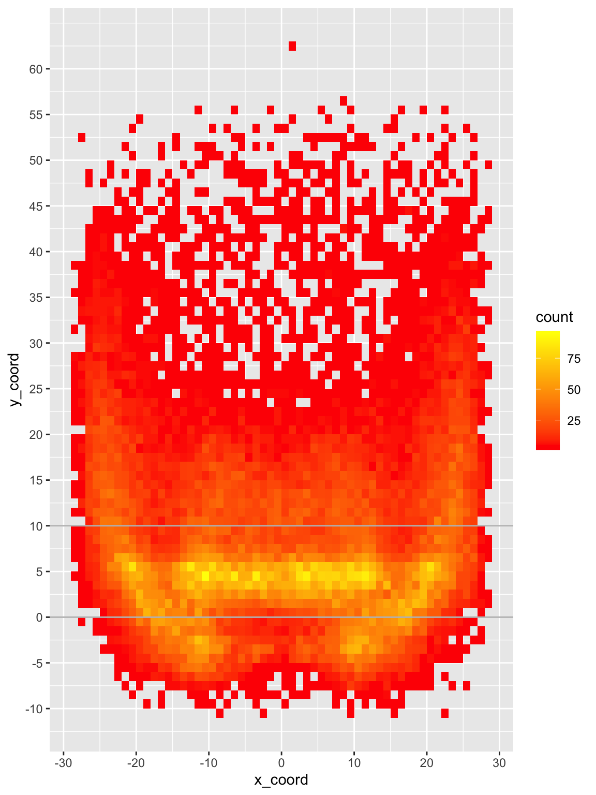
We can now see that while there ARE passes all over the field, the majority are around the 2-7 yard mark with small but relatively dense pockets elsewhere. Passes are most frequently thrown at 4, 5 or 6 yards and ~68% of passes are thrown 10 yards or shorter.
# histogram of just Y coord
pass_map_df %>%
ggplot(aes(x = y_coord)) +
geom_histogram(binwidth = 1) +
geom_vline(xintercept = c(5)) +
scale_x_continuous(breaks = seq(-10, 60, 5))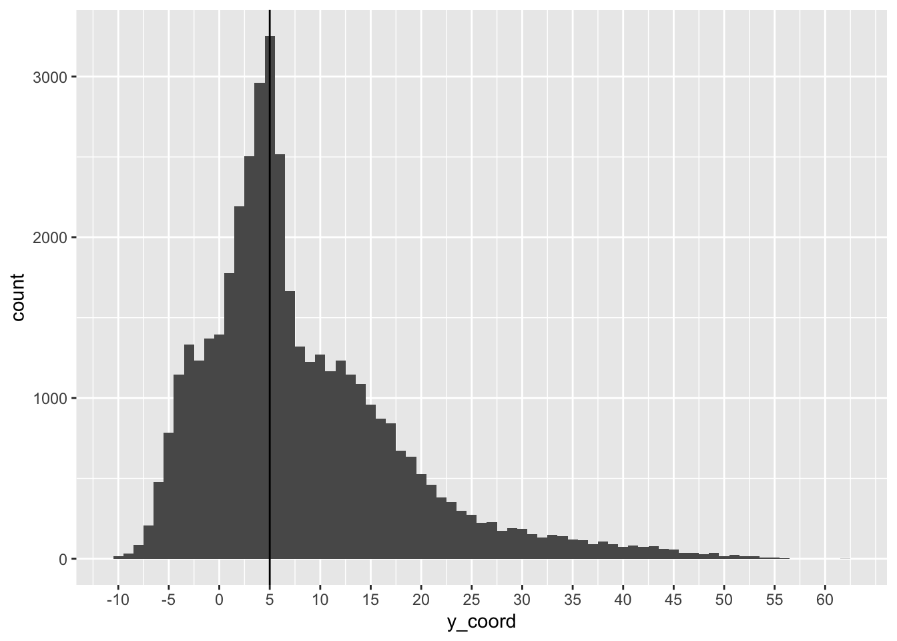
# calc some percentages
pass_by_y <- pass_map_df %>%
mutate(y_rnd = round(y_coord, digits = 0)) %>%
count(y_rnd) %>%
mutate(
total = sum(n),
pct_total = n / total,
roll_total = cumsum(pct_total)
)
# ~35.6% of passes between 2-7 yards
pass_by_y %>%
filter(between(y_rnd, 2, 7)) %>%
summarize(pct = sum(pct_total))## # A tibble: 1 x 1
## pct
## <dbl>
## 1 0.351# passes are most commonly thrown at 4-6 yards
# 68% of passes are thrown 10 yards or shorter
pass_by_y %>%
arrange(desc(pct_total))## # A tibble: 68 x 5
## y_rnd n total pct_total roll_total
## <dbl> <int> <int> <dbl> <dbl>
## 1 4 3705 49758 0.0745 0.408
## 2 5 3420 49758 0.0687 0.477
## 3 6 3248 49758 0.0653 0.542
## 4 2 2774 49758 0.0557 0.282
## 5 3 2550 49758 0.0512 0.333
## 6 1 1894 49758 0.0381 0.226
## 7 0 1775 49758 0.0357 0.188
## 8 7 1771 49758 0.0356 0.578
## 9 8 1736 49758 0.0349 0.612
## 10 10 1642 49758 0.0330 0.672
## # … with 58 more rowsAnother major advantage of geom_hex or geom_bin2d() is they’re remarkably faster for big data than plotting geom_point() along with reducing the likelihood of overplotting! For a toy example of about 1.7 million points, geom_hex() executes in about 2 sec vs 20 sec with geom_point(), and then subsequent 30-60 sec to “draw” the output in the viewer of R/RStudio.
2D Density of “smaller” data
So we’ve covered hex and rectangular 2d bins. To me, these are not as attractive for “small data” like we may see for individual QB plots. Let’s take Patrick Mahomes for example, he only has ~1,000 passes in this dataset. We can plot with a geom_hex() for each 1x1 yard chunk like we did before, but I honestly have trouble determining trends of where he likes to throw with that graphic.
pass_map_df %>%
filter(str_detect(name, c("Mahomes"))) %>%
ggplot(aes(x = x_coord, y = y_coord)) +
geom_hex(binwidth = c(1, 1)) +
scale_y_continuous(breaks = seq(-10, 60, 5))
We could always use larger bins, but if we’re just trying to see large trends we have another strategy in geom_density_2d().
Perform a 2D kernel density estimation using MASS::kde2d() and display the results with contours. This can be useful for dealing with overplotting. This is a 2D version of geom_density(). geom_density_2d() draws contour lines, and geom_density_2d_filled() draws filled contour bands.
This essentially fits a polygon around the most frequent points by x/y coordinates, and then colors them according to density. x-y positions on the field and “z” is the density.
pass_map_df %>%
filter(str_detect(name, c("Mahomes"))) %>%
ggplot(aes(x = x_coord, y = y_coord)) +
geom_density_2d_filled() +
scale_y_continuous(breaks = seq(-10, 60, 5))
Now if we want to get even more clever, we can use this compare passing heatmaps of specific QBs. We can normalize across the facets, and drop the least frequent passes with specific breaks. We’ve binned into 10 specific breakpoints. By adding a horizontal line we can pretty clearly see that Carr’s most common passes are behind the 5 yard line, while Mahomes has passed beyond the 5 yard line more frequently.
pass_map_df %>%
filter(str_detect(name, c("Mahomes|Derek Carr"))) %>%
ggplot(aes(x = x_coord, y = y_coord)) +
geom_density_2d_filled(
aes(fill = ..level..),
contour_var = "ndensity", # normalize to each QBs total passes
breaks = seq(0.1, 1.0, length.out = 10) # drop the lowest passes
) +
scale_y_continuous(breaks = seq(-10, 60, 5)) +
facet_wrap(~name) +
geom_hline(yintercept = 5)
This is all well and good, but it’s not the prettiest piece of dataviz.
Thanks to Ethan Douglas and his post on OpenSourceFootball.com, we have a good framework about how to approach building a NFL field as a graph.
Build the field
not_div_5 <- function(x) {
# select only elements of the vector not divisible by 5
x[x %% 5 != 0]
}
center_df <- tibble(
x_coord = c(rep(-3.1, 60), rep(3.1, 60)),
y_coord = seq(-14, 59, 1) %>% rep(2) %>% not_div_5(),
text = "--"
)
# line labels
annotate_df <- tibble(
x_coord = c(12.88, -12.88) %>% rep(each = 5),
y_coord = seq(10, 50, 10) %>% rep(2),
text = seq(10, 50, 10) %>% rep(2) %>% str_replace("(.)(.)", "\\1 \\2"),
rotation = c(90, 270) %>% rep(each = 5)
)
# yardlines
yardline_df <- tibble(
y = seq(-15, 60, 5),
yend = seq(-15, 60, 5),
x = rep(-56 / 2, 16),
xend = rep(56 / 2, 16)
)
# sidelines
sideline_df <- tibble(
y = c(-15.15, -15.15),
yend = c(60.15, 60.15),
x = c(-56 / 2, 56 / 2),
xend = c(-56 / 2, 56 / 2)
)ggplot(data = NULL, aes(x = x_coord, y = y_coord)) +
coord_cartesian(
xlim = c(-53.333 / 2, 53.333 / 2),
ylim = c(-15, 60)
) +
geom_text(
data = annotate_df, aes(label = text, angle = rotation),
color = "black", size = 8
) +
geom_segment(
data = yardline_df, color = "black", size = 1,
aes(x = x, y = y, xend = xend, yend = yend)
) +
geom_segment(
x = -56 / 2, y = 0, xend = 56 / 2, yend = 0,
color = "blue", size = 1, alpha = 0.5
) +
geom_segment(
data = sideline_df, color = "black", size = 2,
aes(x = x, y = y, xend = xend, yend = yend)
) +
geom_text(
data = center_df,
aes(label = text), color = "black", vjust = 0.32
) +
theme_void()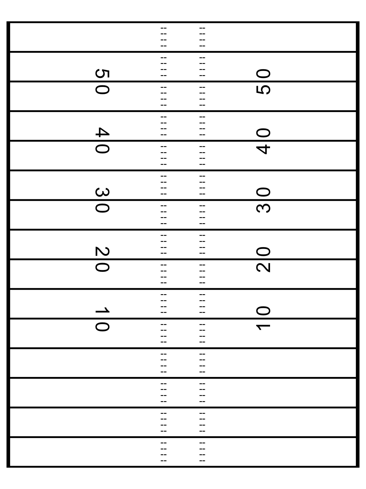
Wrap it into a function
We can turn this into a function so that we don’t have to copy-paste it all over the place. Note that I’m wrapping it in a list so I can use it with + in a sequence of ggplot2 calls.
I’m also using front_col and back_col to let us switch from white on black to black on white if needed.
add_field <- function() {
list(
coord_cartesian(
xlim = c(-53.333 / 2, 53.333 / 2),
ylim = c(-15, 60)
),
geom_text(
data = annotate_df, aes(label = text, angle = rotation),
color = front_col, size = 8
),
geom_segment(
data = yardline_df, color = front_col, size = 1,
aes(x = x, y = y, xend = xend, yend = yend)
),
geom_segment(
x = -56 / 2, y = 0, xend = 56 / 2, yend = 0,
color = "blue", size = 1, alpha = 0.5
),
geom_segment(
data = sideline_df, color = front_col, size = 2,
aes(x = x, y = y, xend = xend, yend = yend)
),
geom_text(
data = center_df,
aes(label = text), color = front_col, vjust = 0.32
),
theme_void(),
theme(
strip.text = element_text(size = 20, color = front_col),
plot.background = element_rect(fill = back_col, color = NA),
legend.position = "none",
plot.margin = unit(c(2, 1, 0.5, 1), unit = "cm"),
plot.caption = element_text(color = front_col),
plot.title = element_text(color = front_col),
plot.subtitle = element_text(color = front_col),
panel.background = element_rect(fill = back_col, color = NA),
panel.border = element_blank()
)
)
}QB Comparison
First let’s filter down to just our two QBs to compare, Patrick Mahomes and Russell Wilson.
passer_df <- pass_map_df %>%
filter(str_detect(name, c("Mahomes|Russel"))) %>%
mutate(name = factor(name, levels = c("Patrick Mahomes", "Russell Wilson"))) %>%
select(name, x_coord, y_coord)
passer_df %>%
ggplot(aes(x = x_coord, y = y_coord)) +
geom_density2d_filled() +
theme(legend.position = "none")
We’ll specify fill and color to both scale with the level/density and normal density peaks across our plots, and finally set our breaks to drop the lowest bin of passes.
pass_map <- passer_df %>%
ggplot(aes(x = x_coord, y = y_coord)) +
geom_density_2d_filled(
aes(fill = ..level.., color = ..level..),
contour_var = "ndensity", # normalize across facets
breaks = seq(0.1, 1.0, length.out = 10)
) +
facet_wrap(~name)
pass_map
We can quickly add the field background to this with our function add_field()!
back_col <- "white"
front_col <- "black"
pass_map +
add_field()
Specify Color schemes
While that’s essentially our final graph perhaps you don’t want to use viridis which is the default color scheme. We can generate custom color palettes or use a pre-built color palette via the paleteer R package. Note that the 3 color palettes I create all do essentially the same thing but it’s:
- Building your own custom color sequence with
grDevices::colorRampPalette()
- Returning a pre-built palette w/
paletteer::paletteer_d()
- Expanding a pre-built palette to be longer with
colorRampPalette
heat_colors <- grDevices::colorRampPalette(c("#800026FF", "#FC4E2AFF", "#FEB24CFF", "#FFFFCCFF"))(10)
heat_palette <- paletteer::paletteer_d("RColorBrewer::YlOrRd", n = 9, direction = -1)
heat_colors_interpolated <- colorRampPalette(paletteer::paletteer_d("RColorBrewer::YlOrRd", n = 9, direction = -1))(10)
heat_colors %>% scales::show_col()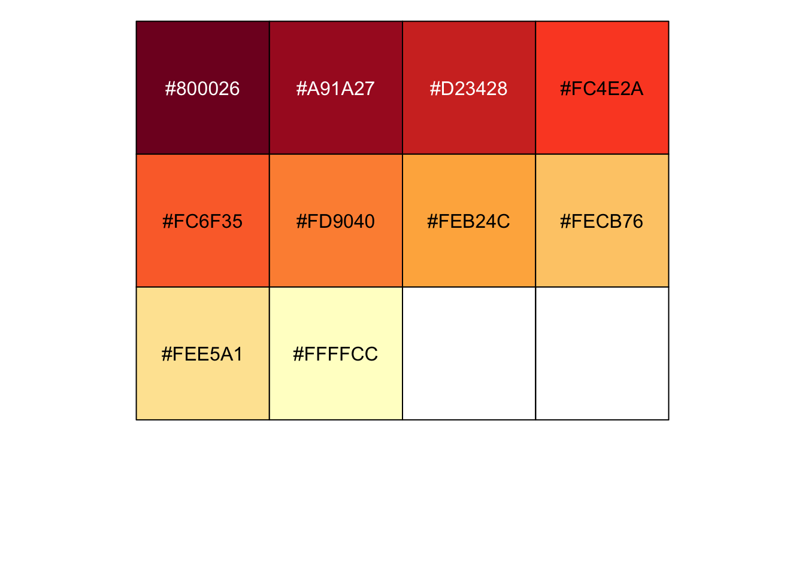
heat_palette %>% scales::show_col()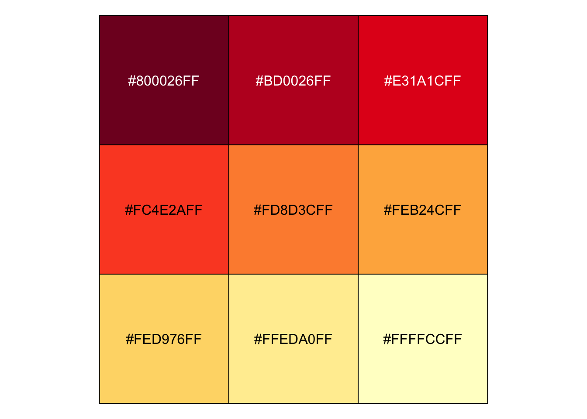
heat_colors_interpolated %>% scales::show_col()
pass_map +
add_field() +
scale_fill_manual(values = c(heat_colors_interpolated), aesthetics = c("fill", "color"))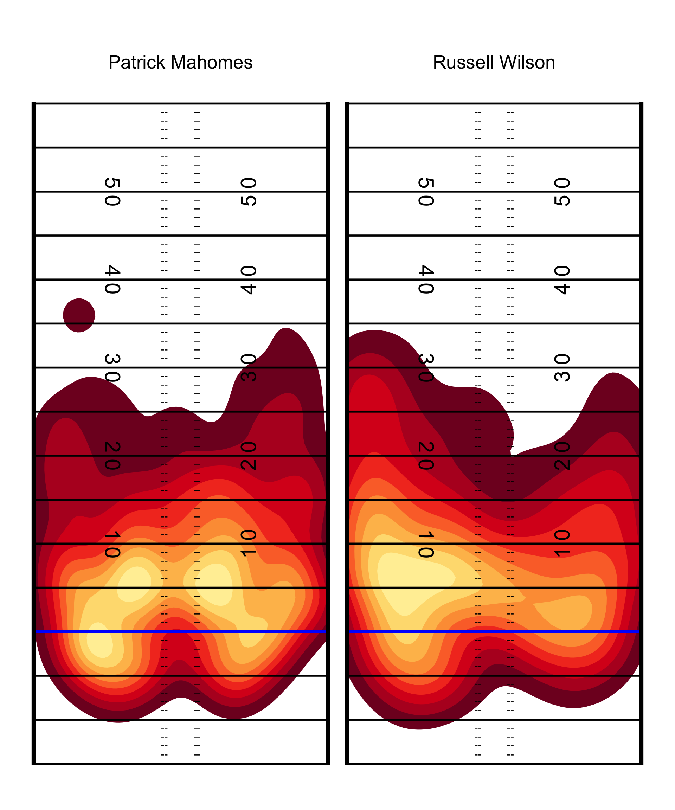
And also in black!
back_col <- "black"
front_col <- "white"
pass_map +
add_field() +
scale_fill_manual(values = c(heat_colors_interpolated), aesthetics = c("fill", "color"))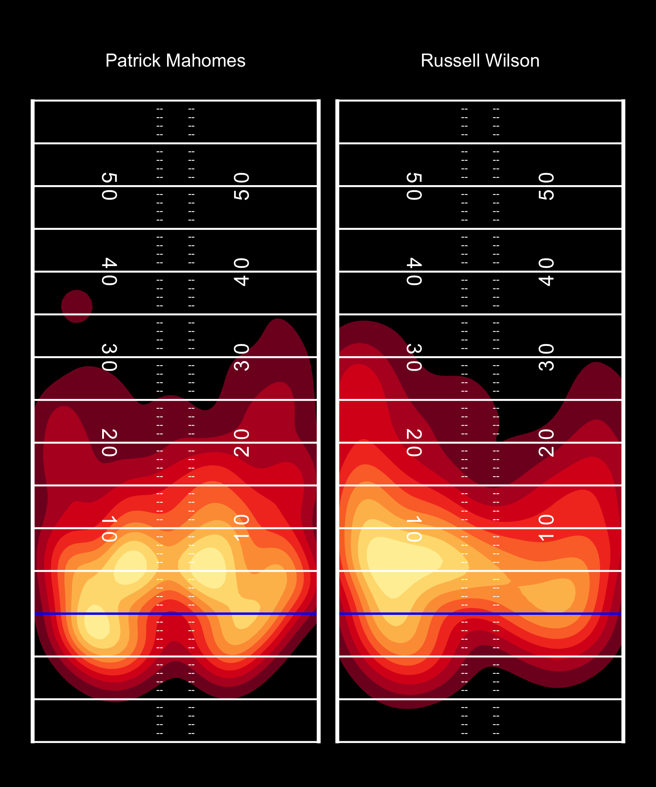
Beautiful!
PFF_Moo style Field
PFF_Moo takes a different approach to field lines, which can be recreated below.
not_div_5 <- function(x) {
# select only elements of the vector not divisible by 5
x[x %% 5 != 0]
}
center_df <- tibble(
x_coord = c(rep(-3.1, 60), rep(3.1, 60)),
y_coord = seq(-14, 59, 1) %>% rep(2) %>% not_div_5(),
text = "--"
)
# line labels
horiz_yd_df <- tibble(
x_coord = c(12.88, -12.88) %>% rep(each = 14),
y_coord = seq(-10, 55, 5) %>% rep(2),
text = seq(-10, 55, 5) %>% rep(2)
)
# yardlines
yardline_df <- tibble(
y = seq(-15, 60, 5),
yend = seq(-15, 60, 5),
x = rep(-56 / 2, 16),
xend = rep(56 / 2, 16)
)
# sidelines
sideline_df <- tibble(
y = c(-15.15, -15.15),
yend = c(60.15, 60.15),
x = c(-56 / 2, 56 / 2),
xend = c(-56 / 2, 56 / 2)
)
add_moo_field <- function() {
list(
coord_cartesian(
xlim = c(-53.333 / 2, 53.333 / 2),
ylim = c(-15, 60)
),
geom_segment(
data = yardline_df, color = front_col, size = 0.5,
linetype = "dashed", alpha = 0.5,
aes(x = x, y = y, xend = xend, yend = yend)
),
geom_segment(
aes(x = -56 / 2, y = 0, xend = 56 / 2, yend = 0),
color = "blue", size = 1
),
geom_segment(
data = sideline_df, color = front_col, size = 2,
aes(x = x, y = y, xend = xend, yend = yend)
),
geom_text(
data = center_df,
aes(label = text), color = front_col, vjust = 0.32
),
geom_text(
data = horiz_yd_df, aes(label = text),
color = front_col, size = 4, fontface = "bold"
),
theme_void(),
theme(
strip.text = element_text(size = 20, color = front_col),
plot.background = element_rect(fill = back_col, color = NA),
legend.position = "none",
plot.margin = unit(c(2, 1, 0.5, 1), unit = "cm"),
plot.caption = element_text(color = front_col),
plot.title = element_text(color = front_col),
plot.subtitle = element_text(color = front_col),
panel.background = element_rect(fill = back_col, color = NA),
panel.border = element_blank()
)
)
}
back_col <- "white"
front_col <- "black"
ggplot(pass_map_df, aes(x = x_coord, y = y_coord)) +
geom_density_2d_filled(
aes(fill = ..level..),
contour_var = "ndensity", # normalize to each QBs total passes
breaks = seq(0.1, 1.0, length.out = 10) # drop the lowest passes
) +
add_moo_field()